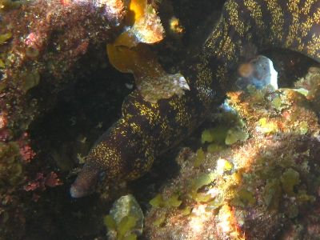

シュノーケルならヒリゾだろ！ | 2011年9月 |
|---|---|
| 夏と言ったら海！ 海と言えばシュノーケル！ シュノーケルならヒリゾ浜！ しかし、今年は夏の天候がよろしくなく、計画は立てても雨だったり、波が高かかったりで、延期すること3回ぐらい、現地まで行ったけど波高く船が出ないのが1回と、なかなかチャンスに恵まれなかったヒリゾ浜ですが、9月の平日にやっと行くことが出来ました♪ そんなわけで、キッカーと伊豆・ヒリゾ浜へシュノーケル♪ | |
 9月の平日は空いてるな |  ダイブ！ダイブ！ |
| さすが、9月の平日だろ空いてます！ 駐車場もタダになるしね。海の中は冷たい所と、暖かい所と海流によって様々です。 魚は一杯！ キッカーはヒリゾ初めてだったみたいね。 やっと行けて良かった〜 期待を裏切らない海の綺麗さ、魚の豊富さで楽しい一日でした。 | |
 分かります？これ全部魚♪ |  魚が、こんなに近くに |
|  分かりにくいかな？ウツボ♪ |  揺れていると幻想的です |
| 写真＆コメント ｂｙ べっしー | |